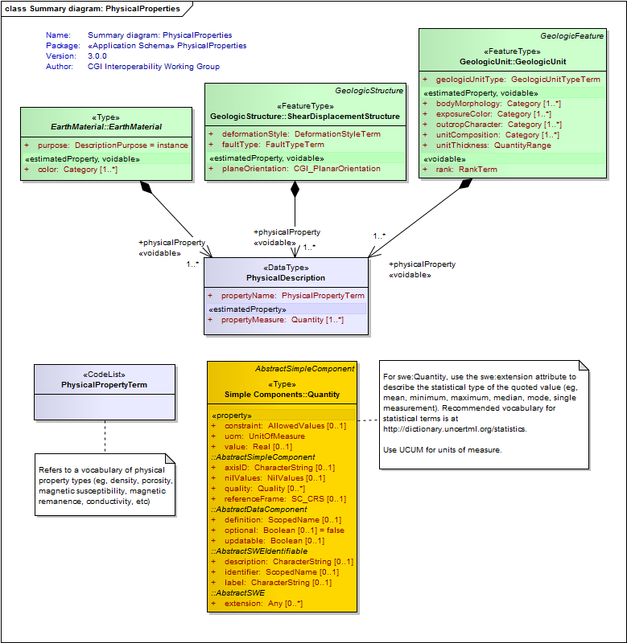
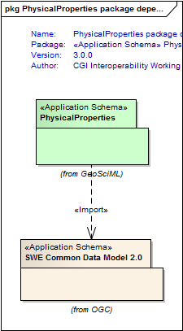

Package PhysicalProperties
The PhysicalProperties Application Schema permits description of bulk physical properties of earth materials, geologic units and geologic structures. The model borrows from the SWECommon model to describe scalar (quantity) values of physical property measurements such as density, porosity, permeability, magnetic susceptibility, and other geophysical properties.
Individual physical property measurements made on sampling features such as specimens, outcrops, and boreholes should be delivered using the ISO19156 Observations and Measurements model.
Class Summary |
|
| <<DataType>> Classes | |
PhysicalDescription
<<DataType>>
|
A class to describe the numeric physical properties of a geologic unit, earth material, or geologic structure. (eg; density, porosity, magnetic susceptibility, remanent magnetism). These properties are modelled here as scalar numeric values (swe:Quantity). Vector and tensor physical properties are considered to be more applicable to located observations and should be delivered as SamplingFeature/Observations with associated geologic unit or geologic structure features. |
| <<CodeList>> Classes | |
PhysicalPropertyTerm
<<CodeList>>
|
Refers to a vocabulary of physical property types (eg, density, porosity, magnetic susceptibility, magnetic remanence, conductivity, etc) |
Tagged Values |
||
| Tag | Value | Notes |
| classMap | https://www.seegrid.csiro.au/subversion/GeoSciML/physicalProperties/trunk/classmap/ClassMap_PhysicalProperties_GeoSciML_v3.xml | |
| gmlProfileSchema | #NOTES#Description: URL of the schema location of a GML profile (optional) | Description: URL of the schema location of a GML profile (optional) |
| owner | IUGS Commission for the Management and Application of Geoscience Information | |
| schemaLocation | https://schemas.geosciml.org/physicalproperties/3.0/physicalProperties.xsd | |
| targetNamespace | http://xmlns.geosciml.org/PhysicalProperties/3.0 | Default: FIXME Description: Target XML namespace of the application schema |
| version | 3.0.0 | Default: FIXME Description: Current version of the application schema |
| xmlns | gsmlpp | Default: FIXME Description: Namespace prefix to be used as short form of the target namespace |
| xsdDocument | physicalProperties.xsd | Default: FIXME Description: Name of an XML Schema document to create representing the content of this package |
| xsdEncodingRule | iso19136_2007_INSPIRE_Extensions | Values: iso19136_2007 | iso19139_2007 | iso19136_2007_INSPIRE_Extensions Default: iso19136_2007 Description: XML Schema encoding rule to apply |
UML Diagram: Summary diagram: PhysicalProperties

UML Diagram: PhysicalProperties package dependencies

UML Diagram: Context Diagram : PhysicalDescription